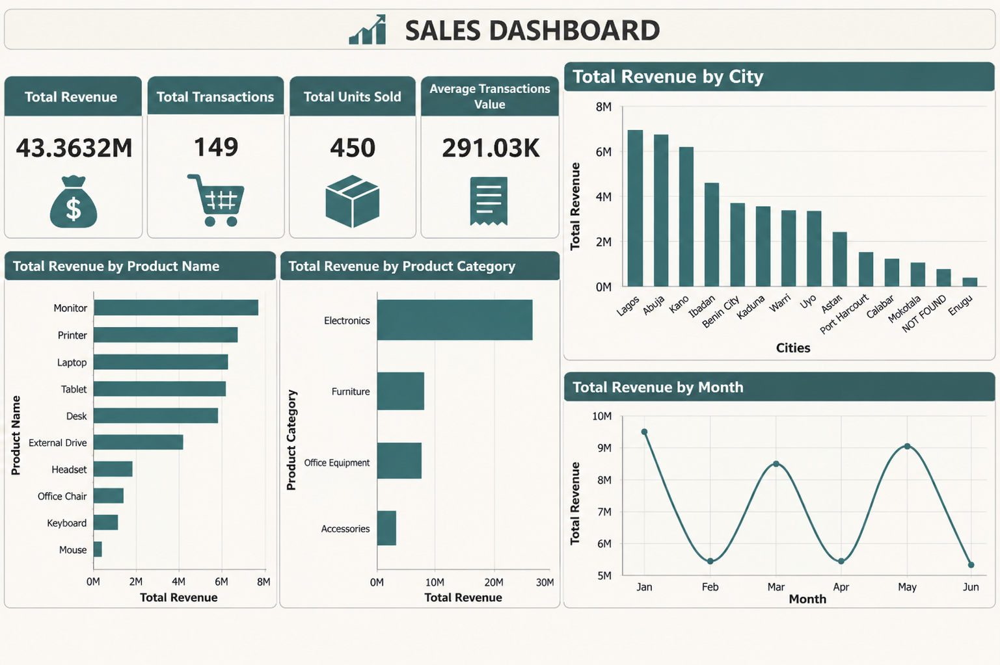
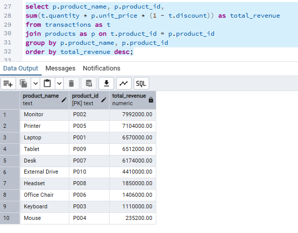
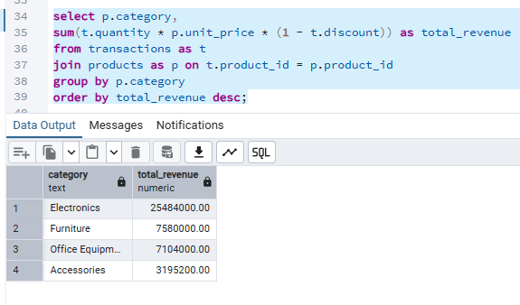
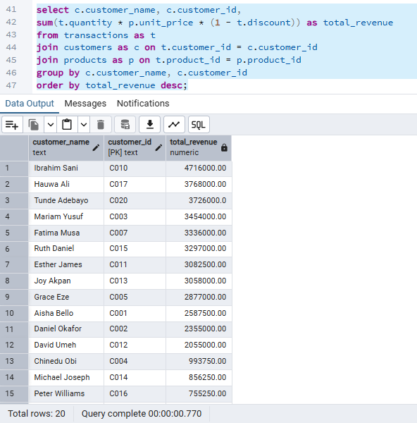
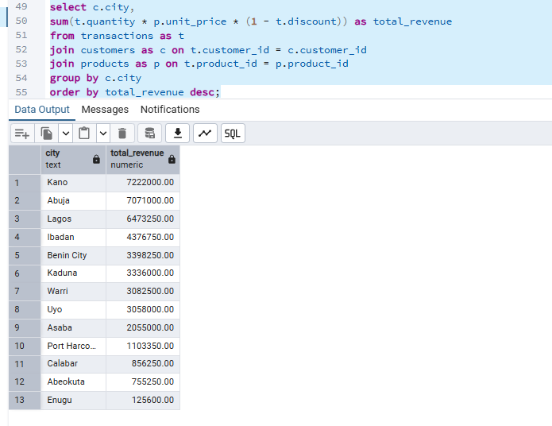
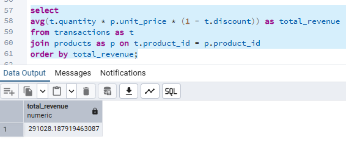

Retail Sales Performance Analysis
Techbridge Services, Task 8. Sample sales data, January to June 2026. Tools: Excel and Google Sheets, PostgreSQL, Power BI.
The questions
- How much money did the business make?
- Which products, categories, cities and customers brought in the most?
- Which type of customer buys the most?
- How did sales move month by month?
- 43,363,200total revenue after discounts
- 149transactions
- 450units sold
- 291,028average sale

The Data
Three tables: Customers, Products and Transactions. Product ID links Transactions to Products, and Customer ID links Transactions to Customers. I merged all three into one sheet so every sale carried its price, product, customer, city and customer type.
How I cleaned it
- Merged the three sheets with VLOOKUP, and used IFERROR to label missing matches as "NOT FOUND".
- Found one sale whose customer is not in the customer list. It is kept in revenue and shown as "NOT FOUND".
- Found one sale whose product is not in the product list, so its price and revenue could not be worked out. I left it out of every total.
- Trimmed a stray double space in one column.
- Corrected one order with a negative quantity, because a quantity cannot be below zero.
- Calculated revenue as quantity × unit price, then took off the discount to get Total Revenue.
- Added a Month column with the TEXT function so I could study monthly sales.
What the Data shows
- Electronics makes the most money. It earned 25,484,000 (58.8%), more than the other three categories combined. Monitor, Printer, Laptop and Tablet alone bring in about 65%.
- Three cities bring in nearly half. Kano (7,222,000), Abuja (7,071,000) and Lagos (6,473,250) make up about 48%. Lagos has the most sales (21), but its average sale (308,250) is lower than Kano's (451,375).
- Sales rise and fall by month. January (9,642,250), May (9,167,500) and March (8,660,250) were strong. February, April and June were near 5,300,000. The number of sales stayed near 25 a month, so the swings come from the size of the orders.
- Cheap items sell a lot but earn little. Accessories are 40% of the items sold but only 7.4% of the money.
- Customer types: Retail earned 23,975,850 (55.3%), Corporate 16,320,350 (37.6%) and Wholesale 2,617,000 (6.0%). Wholesale buyers purchase often but spend only about 90,241 a time.
- A few customers matter a lot. The top five bring in 19,000,000 (43.8%), led by Ibrahim Sani (Abuja) with 4,716,000.
SQL work
I used PostgreSQL to answer five business questions. Each query joins the tables, groups the rows and adds up revenue as quantity × unit price × (1 − discount). I used an inner join, so the two sales with unknown codes are left out of some results. Tap a question to see the query and its result.
1. What is the total revenue of each product?
select p.product_name, p.product_id, sum(t.quantity * p.unit_price * (1 - t.discount)) as total_revenue from transactions as t join products as p on t.product_id = p.product_id group by p.product_name, p.product_id order by total_revenue desc;
Monitor leads with 7,992,000, then Printer with 7,104,000. Mouse is lowest with 235,200.

2. Which product category earned the most?
select p.category, sum(t.quantity * p.unit_price * (1 - t.discount)) as total_revenue from transactions as t join products as p on t.product_id = p.product_id group by p.category order by total_revenue desc;
Electronics earned 25,484,000. Accessories earned the least, 3,195,200.

3. Which customers brought in the most revenue?
select c.customer_name, c.customer_id, sum(t.quantity * p.unit_price * (1 - t.discount)) as total_revenue from transactions as t join customers as c on t.customer_id = c.customer_id join products as p on t.product_id = p.product_id group by c.customer_name, c.customer_id order by total_revenue desc;
Ibrahim Sani is first with 4,716,000, then Hauwa Ali with 3,768,000 and Tunde Adebayo with 3,726,000. Kelvin George is lowest with 109,600.

4. Which city earned the most?
select c.city, sum(t.quantity * p.unit_price * (1 - t.discount)) as total_revenue from transactions as t join customers as c on t.customer_id = c.customer_id join products as p on t.product_id = p.product_id group by c.city order by total_revenue desc;
Kano earned 7,222,000. Enugu earned the least, 125,600.

5. What is the average transaction value?
select avg(t.quantity * p.unit_price * (1 - t.discount)) as avg_transaction_value from transactions as t join products as p on t.product_id = p.product_id;
The average sale is about 291,028.

What I would recommend
- Keep Monitors, Printers, Laptops and Tablets well stocked and promote them most.
- Sell accessories together with big items to raise the value of each order.
- Run offers in February, April and June to lift the slow months.
- Reward the top customers and keep finding new ones.
- Look at wholesale prices and the products wholesale buyers choose.